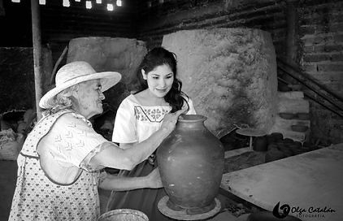
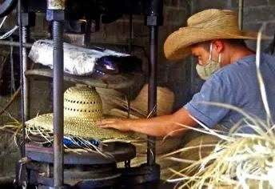
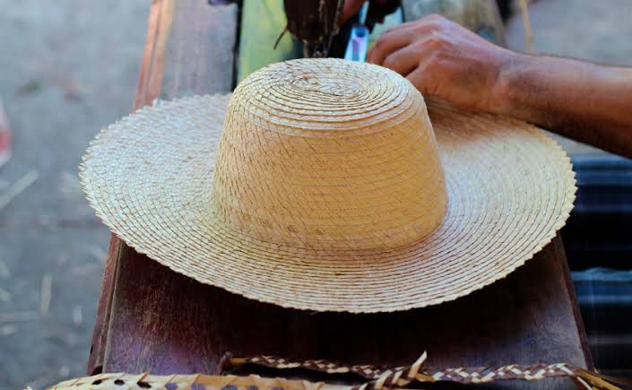

Cuquio es un pueblo productor y para eso se necesita gente con trabajadora y la hay, en la región se hacen muchos tipos de artesanías que sorprenden a los turistas.
Alfareria
En Teponahuasco aun sobrevive la tradición alfarera que ha sido heredada desde la época prehispánica, pues esa comunidad se ha caracterizado desde antaño por su trabajo en dicho material. Actualmente se cuenta con un taller en el que trabaja un grupo importante de mujeres, aunque en muchas de las casas de aquel pueblo se puede observar cómo se han construido pequeños talleres para emprender el negocio familiar. Quien visita Cuquío o Teponahuasco no puede irse sin una pieza creada con las manos trabajadoras de la gente de nuestra región.

Sombreros
En la comunidad de Juchitlán existe una familia que ha heredado el oficio de su padre, quien se dedicaba a realizar sombreros de palma y resguardando las hormas y técnicas que provienen desde antes de la época de la Revolución.
Para elaborar un sombrero se requiere de gran dedicación y paciencia, pues el proceso va desde la búsqueda de la palma, la preparación, el teñir una parte de manera natural sumergiendo la palma en lodo podrido, el tejer la palma, coser y darle los terminados a la pieza, todo esto se hace en un tiempo aproximado de quince días, es por ello que cada sombrero posee un alto valor artesanal, ya que no es común encontrar este tipo de obras.

